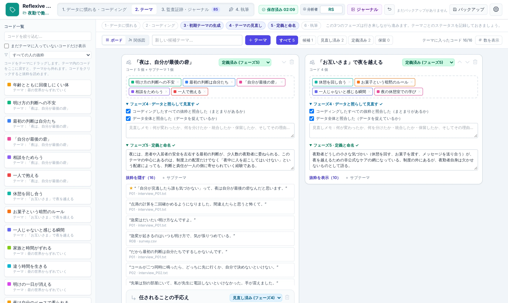

Reflexive Thematic Analysis Canvas
再帰的テーマ分析のためのワークスペース
インタビューの逐語録や自由記述の回答を、再帰的テーマ分析（Braun & Clarke）の6つのフェーズに沿って分析するための、ブラウザだけで動くワークスペースです。インストールも登録も要りません。データはあなたのパソコンから出ず、AI も使いません。

特長
再帰的テーマ分析のために作ったソフト
汎用の質的分析ソフトは便利ですが、出現頻度や一致率、固定したコードブックの方向へ自然と誘導します。このアプリは、再帰的テーマ分析の考え方にそのまま合うように作っています。
🔒データは手元に
文書はブラウザの中（IndexedDB）にだけ保存され、どこにも送信されません。倫理審査でも説明しやすい構成です。
✍️AI は使わない
コーディングも要約も、分析はすべて研究者が行います。生成AI（LLM）は一切組み込まれておらず、データが外部のAIサービスに送信・学習されることはありません。
#数で決めない
出現頻度は初期設定で隠し、一致率は計算しません。何が重要かは数ではなく、解釈で決まるからです。
📓省察を残す
解釈に関わる変更は監査証跡に自動で残り、省察ジャーナルはどこからでも書けます。そのまま論文の付録になります。
📄原稿まで
フェーズ6は「書くこと」から始まります。分析の記述、テーマの関係図、表を Word（.docx）に書き出せます。
🧭RTARG に対応
再帰的テーマ分析の報告ガイドライン（Braun & Clarke, 2024）について、各項目にこのアプリがどう貢献できるかの対応表を公開しています。
分析の流れ
4つのタブで、6つのフェーズを行き来する
フェーズは一方通行ではありません。テーマを見直しながらコーディングに戻る、という往復をそのまま行えるように、フェーズはタブではなく「テーマごとのステータス」として記録します。
データに慣れる・コーディング
フェーズ1–2。逐語録・自由記述を取り込み、読み、メモを取り、コードを付けます。全文検索、話者の区別、抜粋の範囲の調整もここで。
テーマ
フェーズ3–5。コードをテーマにまとめ、データと照らして見直し、定義し、名前を付けます。テーマ間の関係は関係図に。
監査証跡・ジャーナル
いつ何をなぜ変えたかの記録と、省察ジャーナル。その時点のテーマ構造も一緒に残ります。
執筆
フェーズ6。テーマごとに、引用を織り交ぜながら分析的な記述を書きます。表と付録は補助として出力します。

こんな人に
はじめての質的分析にも
- 卒業論文・修士論文・博士論文で、インタビューや自由記述を分析する学生
- 学生の分析を「批判的な友人」として一緒に読む指導教員
- 看護・心理・教育・福祉・社会学などで、再帰的テーマ分析を使う研究者
- 有料ソフトを使えない環境や、データを外に出せない研究
できないこと
はじめに知っておいてほしいこと
- 扱えるのは文章だけです（.txt・.docx・.doc・.csv、REFI-QDA の .qdpx）。音声・動画・画像・PDF は扱えません。
- コードブック型のテーマ分析（テンプレート分析・フレームワーク分析）や、コーダー間の一致率には対応していません。
- 複数人が同時に同じプロジェクトを編集する機能はありません。
- データは使っているブラウザの中にだけあります。こまめにバックアップしてください。
- パソコンのブラウザ（Chrome・Edge・Firefox・Safari）向けです。
引用
研究で使ったときは
論文などで使った場合は、次のように引用してください（バージョンは使ったものに置き換えてください）。
ご意見・不具合の報告は GitHub の Issues へ。質的研究者からのフィードバックを特に歓迎しています。